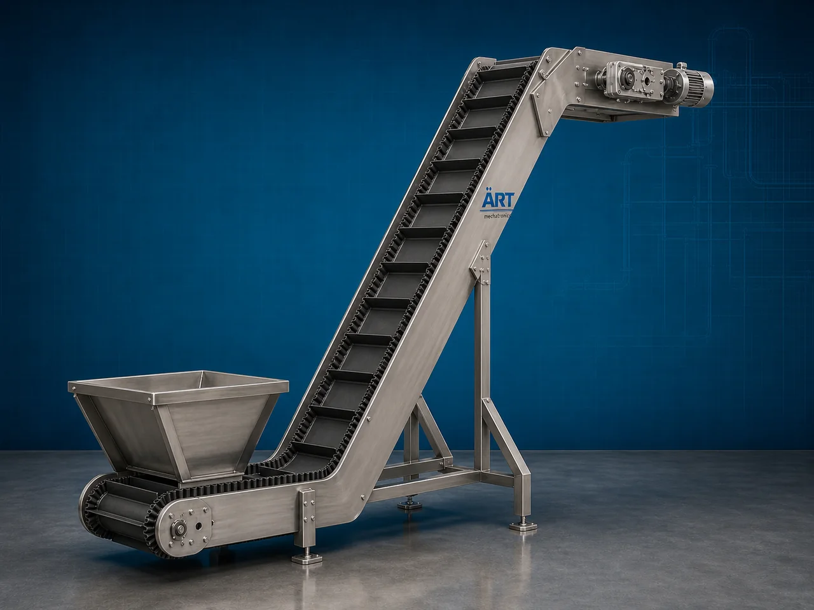

Cleat Conveyor Machine (Industrial Cleated Belt Material Handling System)
A Cleat Conveyor Machine, also known as a Cleated Belt Conveyor or Industrial Cleat Conveyor System, is a specialized industrial material handling equipment designed for transporting powders, granules, grains, snacks, packets, pouches, boxes, and bulk materials safely on inclined or vertical…

About the Cleat Conveyor
Cleat conveyors are widely used for: ✔ Inclined material transfer ✔ Vertical product lifting ✔ Bulk material handling ✔ Packaging line feeding ✔ Hopper loading systems ✔ Automated production line integration
The machine improves: ✔ Production efficiency ✔ Material handling automation ✔ Product safety during transfer ✔ Labor reduction ✔ Space optimization ✔ Continuous production flow
The conveyor operates using: ✔ Motor-driven cleated belts ✔ Cleats or flights mounted on belt surface ✔ Inclined conveyor structures ✔ Roller and pulley systems
to move products efficiently between different elevations.
Cleat conveyor machines are widely used in industries such as:
Food processing industries
Snack manufacturing plants
Packaging industries
Grain processing plants
Pharmaceutical industries
Chemical industries
Agriculture industries
Manufacturing plants
where safe inclined transfer of materials and products is essential.
The machine is highly suitable for: ✔ Inclined conveying ✔ Product elevation ✔ Bulk material feeding ✔ Hopper loading ✔ Packaging automation ✔ Granule and powder transfer
ART Mechatronics offers high-performance cleat conveyor machines, engineered for continuous industrial operation, reliable inclined transfer, hygienic design, and long-term heavy-duty performance.
Working Principle of Cleat Conveyor Machine
Products or bulk materials are loaded onto cleated conveyor belt at inlet point
Electric motor drives cleated belt system continuously
Cleats mounted on belt hold material securely during inclined transfer
Machine transports: ✔ Powders ✔ Granules ✔ Grains ✔ Snacks ✔ Pouches ✔ Boxes ✔ Bulk materials without rollback or spillage.
Cleats or flights prevent products from sliding backward on inclined surfaces
Conveyor speed and inclination angle optimized according to material type
Material discharged automatically at elevated destination point
Types of Cleat Conveyor Machines
- 1. Inclined Cleat Conveyor
Used for: ✔ Inclined bulk material transfer applications
- 2. Sidewall Cleat Conveyor
Uses: ✔ Sidewall and cleat combination belts for steep angle conveying.
- 3. Food Grade Cleat Conveyor
Suitable for: ✔ Hygienic food and pharmaceutical industries
- 4. Hopper Feeding Cleat Conveyor
Designed for: ✔ Feeding materials into mixers, packaging machines, and hoppers
- 5. Vertical Cleat Conveyor
Suitable for: ✔ High-angle product elevation applications
- 6. Heavy Duty Industrial Cleat Conveyor
Designed for: ✔ Large-capacity industrial conveying operations
Industries Using Cleat Conveyor Machine
🍃 Food Processing Industry Snack and food product elevation systems 📦 Packaging Industry Packaging line feeding and transfer systems 🌾 Grain Processing Industry Grain and bulk material conveying 💊 Pharmaceutical Industry Hygienic powder and granule transfer ⚗️ Chemical Industry Powder and raw material handling systems 🌱 Agriculture Industry Seed and fertilizer transfer systems 🏭 Manufacturing Industry Production line automation systems 🍟 Snack Manufacturing Industry Chips and namkeen conveying systems
Features & Advantages
✔ Efficient inclined and vertical material transfer ✔ Cleats prevent material rollback and spillage ✔ Continuous industrial operation ✔ Heavy-duty industrial construction ✔ Suitable for powders, granules, and packaged products ✔ Improves production automation and efficiency ✔ Hygienic food-grade conveyor options available ✔ Adjustable speed and inclination options ✔ Low maintenance and energy-efficient operation
Technical Highlights
Conveyor Type: Inclined cleat conveyor Sidewall cleat conveyor Vertical cleat conveyor Construction: Stainless Steel / Mild Steel Belt Material: PVC PU Rubber Food-grade belts Cleat Design: Straight cleats Angled cleats Sidewall cleats Drive System: Geared motor drive Variable frequency drive (VFD) Automation: Semi-automatic Fully automatic PLC-based systems
Turnkey Cleat Conveying Solutions
ART Mechatronics offers: Complete cleat conveyor systems Packaging and processing line integration Hopper feeding conveyor solutions Industrial automation systems Installation & commissioning After-sales service & AMC
Why Choose Art Mechatronics
Expertise in industrial material handling systems Customized conveyor solutions for multiple industries High-performance and durable industrial construction Energy-efficient and reliable conveying systems Proven industrial performance across sectors
Applications
Food Processing Plants Packaging Industries Pharmaceutical Manufacturing Units Grain Processing Plants Snack Manufacturing Facilities Industrial Automation Systems
Industries that use the Cleat Conveyor
Related Conveying & Handling machines
Get pricing & specs for the Cleat Conveyor
Share the product, target capacity, current process and plant location. These details help our engineers discuss the right machine or line configuration.
One partner, from design to start-up
ART Mechatronics designs, manufactures, installs and commissions your Cleat Conveyor solution with regional presence in India, UAE and Thailand.